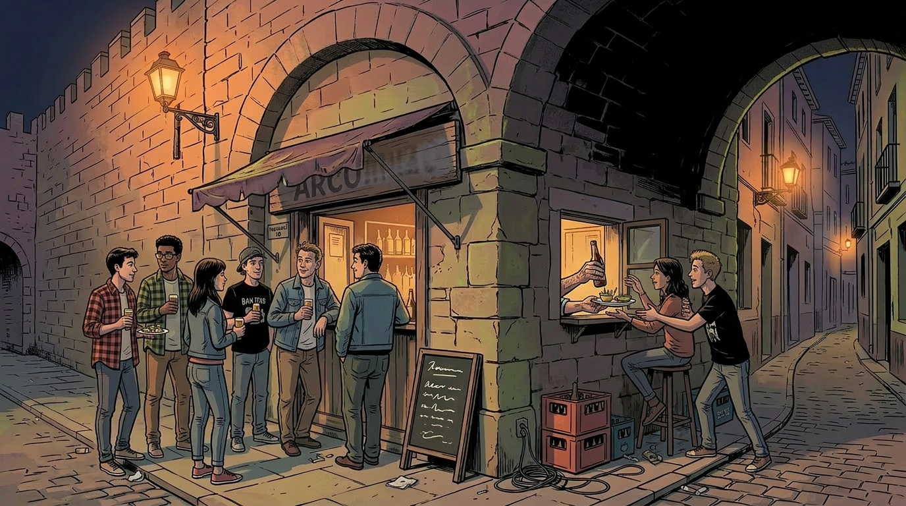

A City Still Worth Loving
Before the Threshold
I should state, for the record, that the Granada I am about to describe was not a paradise. It merely had the distinctive quality of being a city one could afford to live in while learning how to think.
In the early 1990s Granada was, by any reasonable measure, the principal university city of eastern Andalusia: a provincial capital of some two hundred and fifty thousand residents whose demographic centre of gravity had been quietly colonised by the student body of the Universidad de Granada. The Ministry’s historical series records just over sixty thousand undergraduates enrolled in 1991–1992; the university currently reports in excess of seventy thousand students across all levels. The figures and their implications are examined more fully in Chapter 5; what matters here is not the headline number but the distribution. The university was not a campus at the edge of town; it was dispersed across the city in such a way that a substantial share of the population, on any given weekday, was walking between a lecture theatre and somewhere else. A student, a hospital orderly, a junior lecturer, a retired mason and a shift worker could each find, within a short walk of where they lived or worked, a place that served them on terms they recognised. That infrastructure of affordable sociability was not concentrated in the half-dozen streets that subsequent decades selected for conversion. It was distributed. The difference, it turns out, was everything.
The word that gives this chapter its subtitle requires a brief defence, because the alternative terms — collapse, decay, destruction, ruin — are all wrong in a way that matters. Granada in 2026 has not collapsed. Its centre stands, its monuments are maintained to a standard that exceeds what most European cities can presently afford, its hotels are full, and its tourism statistics remain the envy of provincial capitals across the Mediterranean. By any metric the city’s tourist board would think to publish, the city is doing well. By several metrics that no tourist board would publish, it has stopped doing the thing it was, until recently, also doing — which is functioning as a system of shared civic life for the people who live in it.
A threshold, in the sense this volume will use the term, is the point past which a system continues to operate but no longer operates for the same constituency (see threshold). It is not a moment of breakdown and it is rarely announced. It is, on the contrary, the result of a series of decisions — taken at different times by different agents, mostly in good faith and within the law — whose cumulative effect is to convert a place that worked for its residents into a place that works for someone else. The question this volume puts to Granada is not whether the conversion has begun, which is no longer in dispute, but at what point it became irreversible, and what the lived experience of that point feels like for someone who was paying attention without yet knowing what to call it.
One establishment in particular survives in memory with the clarity of things one has not yet learned to describe properly. It was a small bar whose legal capacity, had anyone asked, would have been somewhere in the region of ten persons, including the proprietor, who also did the cooking, the serving, and the greeting of regulars whose names he had known since before they were regulars. On a Friday evening at its busiest it contained, by unhurried count, around thirty. A party who could not plausibly be accommodated within the premises would, on the proprietor’s own initiative, be served through the street window: bottles of beer passed out horizontally, the small plate that came with each drink handed across with the matter-of-fact efficiency of someone for whom the arrangement was neither unusual nor, in any meaningful sense, against the rules. The rules, in any case, were understood to be the sort that existed for different premises.
I am aware that this is already beginning to sound like charm, which is precisely the distortion I want to resist. The bar’s ventilation would now be classed as a public health hazard. The tapas sat on an unrefrigerated counter in a way that anyone paying attention to seafood should have found more alarming than they apparently did. The self-correction is necessary here, because it is exactly where nostalgia does its damage: by converting the absence of a better alternative into a positive quality of the thing remembered.
The corrective is empirical. What that bar and those shared flats and those walkable circuits provided was not charm. It was a system of provisioning for a particular kind of inhabitant — the not-yet-productive citizen, the student, the underpaid young professional — on terms that the inhabitant could meet. When a city stops being able to provision that category of person at a price they can pay, what it loses is not atmosphere. It loses the conditions under which a university town is a university town rather than a conference venue with seminars attached. Cócola-Gant’s work on the reconfiguration of central districts under tourist pressure (2018) describes the mechanism precisely; what he does not describe, because it would not be his business to, is how quickly the mechanism can be mistaken for weather.
I return to Granada now as someone who has learned to describe, in technical language, what he once simply used. This is not an improvement. It is the thing this volume is about.

Plate II. Establishment, unnamed, eastern Andalusia, c. 1990. Legal capacity: ten. Observed capacity on a Friday evening: approximately thirty, plus proprietor, who also served as cook and, when required, as window. Service through the street window was not, at the time, considered remarkable, and was not, at the time, remarked upon. Private collection.